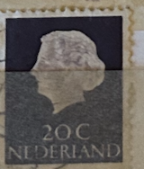
| SOURCE | TITLE| IMAGE MATCH | click to source page |
| HipStamp | Netherlands Sc#347 MNH, 20c vio blk, Queen Juliana - 1953-1967 - Type 'En Pro... | Europe - Netherlands & Colonies, General Issue Stamp / HipStamp |  |
| eBay | Netherlands - 1953 Queen Juliana #2 | eBay | 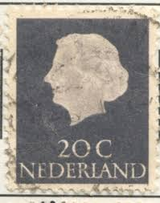 |
| HipStamp | Netherlands #352 40c Queen Juliana - Used | Europe - Netherlands & Colonies, General Issue Stamp / HipStamp | 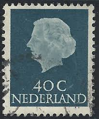 |
| Colnect | Netherlands : Stamps [Year: 1965] [1/4] : Colnect 📮 |  |
| eBay | NETHERLANDS #347 1953 20c QUEEN JULIANA MINT VF NH O.G | eBay | 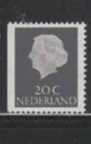 |
| eBay | Black Elizabeth II (1952-2022) Era Canadian Stamps for sale | eBay |  |
| eBay | Brown Elizabeth II (1952-2022) Era Canadian Stamps for sale | eBay | 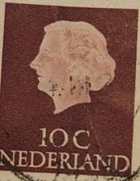 |
| eBay | Blue Royalty Elizabeth II (1952-2022) Era Canadian Stamps for sale | eBay | 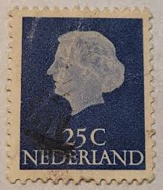 |
| sellosmundo.com | Netherlands 20c 1965. Netherlands Europe ref. 163731 | 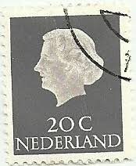 |
| eBay | Royalty Elizabeth II (1952-2022) Era Used Canadian Stamps for sale | eBay | 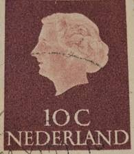 |
| eBay | Brown Royalty Elizabeth II (1952-2022) Era Canadian Stamps for sale | eBay |  |
| allnumis.com | 40 Cents 1953 - Queen Juliana, Queen Juliana - Netherlands - Stamp - 7840 | 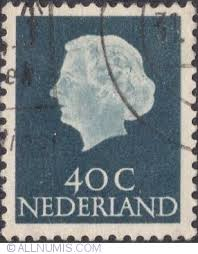 |
| Old-Stamps.com | Queen Juliana - Nederland / Nederland 1965 | 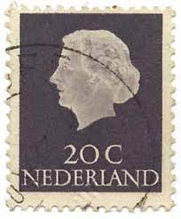 |
| HipStamp | Netherlands 1953 Sc#348 SG#779 25c Blue Queen Juliana Used | Europe - Netherlands & Colonies, General Issue Stamp / HipStamp | 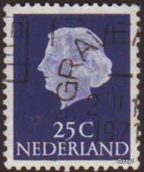 |
| Bob Shop | Netherlands & Colonies - Netherlands-Used-Cancel-Thematic-Famous Person was listed for 1.00 on 8 Dec at 23:02 by DeonRickTraders in Pretoria / Tshwane (ID:660416398) | 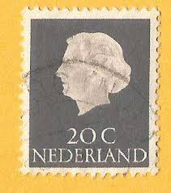 |
| Etsy | 1953-1967 Vintage 20cent Stamps, Queen Juliana Silhouette, Blue - Gray Used Stamps for Collage, Art Projects, Journaling Etc. - Etsy | 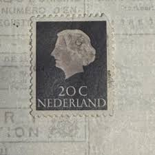 |
| Jace Stamps | Netherlands Scott 348 Used - C$0.15 : Jace Stamps, Quality Stamps since 1997 | 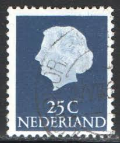 |
| Alamy | Postage stamp netherlands hi-res stock photography and images - Alamy | 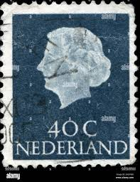 |
| HipStamp | Netherlands #352 40c Queen Juliana | Europe - Netherlands & Colonies, General Issue Stamp / HipStamp | 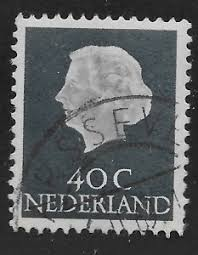 |
| Todocolección | paises bajos 1939 centenario de los ferrocarril - Buy Antique stamps of Netherlands on todocoleccion | 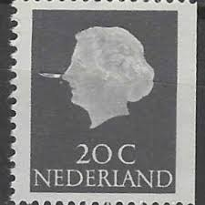 |
| Shutterstock | 11+ Thousand Netherlands Stamp Royalty-Free Images, Stock Photos & Pictures | Shutterstock | 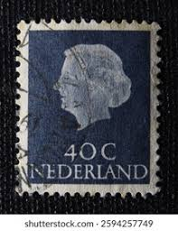 |
| Alamy | Netherlands queen juliana stamp hi-res stock photography and images - Page 2 - Alamy | 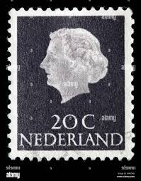 |
| American Society for Netherlands Philately | Magazine of the American Society for Netherlands Philately Volume 45/2 | 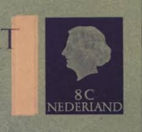 |
| eBay UK | Netherlands 1953 40c Queen Juliana Stamp | eBay UK | 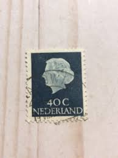 |
| HipStamp | Netherlands 347 Used (7) | Europe - Netherlands & Colonies, General Issue Stamp / HipStamp | 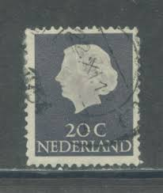 |
| ebid.net | USA 1968 SGA1351 usa41 USA & Jet Aircraft 21c Used Stamp on eBid United Kingdom | 199449731 | 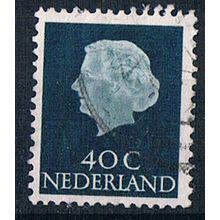 |
| Dreamstime.com | NETHERLANDS - CIRCA 1949: a Stamp Printed in Netherlands, Shows Portrait of Queen Juliana, Monogram and a Crown without Editorial Photography - Image of retro, postmark: 184392062 |  |
| Alamy | NETHERLANDS - CIRCA 1953: A stamp printed in the Netherlands shows Queen Juliana, circa 1953 Stock Photo - Alamy | 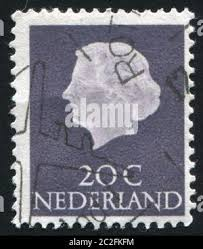 |
| Mystic Stamp Company | 345//47 - 1953-71 Netherlands - Mystic Stamp Company | 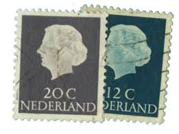 |
| stampsandstuff.net | Stamps from Netherlands |  |
| Shutterstock | 26 Lippe Biesterfeld Royalty-Free Images, Stock Photos & Pictures | Shutterstock | 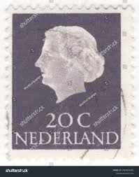 |
| Todocolección | 1954 holanda reina juliana - Buy Antique stamps of Netherlands on todocoleccion | 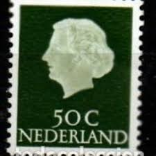 |
| ycjstamps.com | Stamp |  |
| Encyclopaedia Philatelica | came under the influence of a machiavellian faith healer called Margaretha Hofmans. Despite widespread scepticism about her activities, the child's eyes improved and she became a trusted comforter and intimate of the | 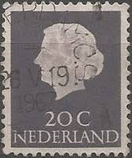 |
| allnumis.com | 35 Cent 1954, Queen Juliana - Netherlands - Stamp - 9934 | 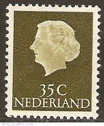 |
| Shutterstock | 23+ Thousand Old Woman Queen Royalty-Free Images, Stock Photos & Pictures | Shutterstock | 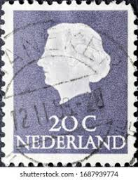 |
| Shutterstock | Canada Post Stamp: Over 4,472 Royalty-Free Licensable Stock Photos | Shutterstock | 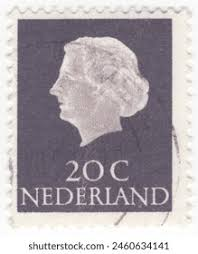 |
| Shutterstock | 312 4 Cents Stamp Royalty-Free Images, Stock Photos & Pictures | Shutterstock | 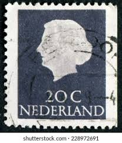 |
| Dreamstime.com | Netherlands, Stamp,Numbers, Numeral Editorial Image - Image of mail, post: 104417605 | 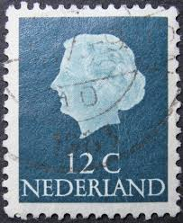 |
| Todocolección | holanda ned.-indie 1913 königin wilhelmina - Buy Antique stamps of Netherlands on todocoleccion |  |
| Shutterstock | Netherlands Circa 1971 Postage Stamp Printed Stock Photo 203830822 | Shutterstock | 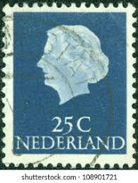 |
| HipStamp | Netherlands 350: 35c Queen Juliana, used, F-VF | Europe - Netherlands & Colonies, General Issue Stamp / HipStamp | 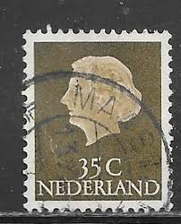 |
| bwdavis.us | Netherlands 1948 to date - Collectibles of Bwdavis |  |
| iStock | Stamp Portrait Of A Queen Stock Photo - Download Image Now - Abstract, Black Background, Black Color - iStock | 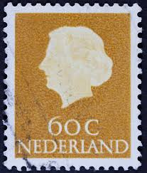 |
| PicClick UK | NETHERLANDS 7 1/2 Cent Stamp c1872 Used £0.99 - PicClick UK | 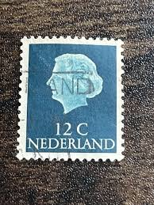 |
| Dreamstime.com | Isolated Netherlands and Moravia Stamp Editorial Stock Image - Image of postmark, letter: 369010284 | 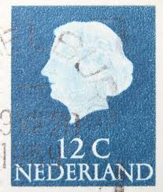 |
| eBay | Dutch New Guinean Stamps for sale | eBay | 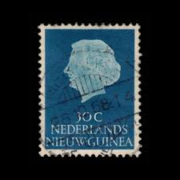 |
| Shutterstock | 11+ Thousand Stamp Netherlands Royalty-Free Images, Stock Photos & Pictures | Shutterstock | 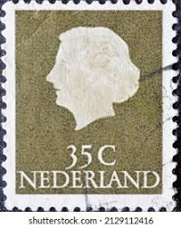 |
| eBay | Netherlands Postage ~ Queen Juliana ~ Brown 10₵ Stamp ~Used/Posted ~1953 ~ D04 | eBay | 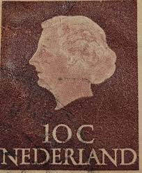 |
| Shutterstock | 2+ Thousand Timbre Envelope Royalty-Free Images, Stock Photos & Pictures | Shutterstock | 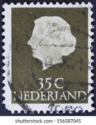 |
| Shutterstock | 8+ Hundred Royal Dutch Mail Royalty-Free Images, Stock Photos & Pictures | Shutterstock | 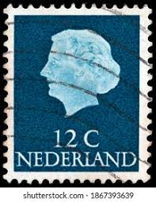 |
| Shutterstock | 1+ Thousand Queen Juliana Royalty-Free Images, Stock Photos & Pictures | Shutterstock | 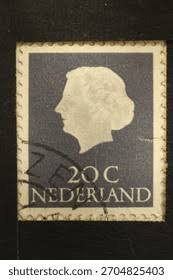 |
| bol.com | Briefkaart met afbeelding koningin Juliana postzegel | bol |  |
| eBay | Netherlands Postage ~ Queen Juliana ~ Brown 10₵ Stamp ~Used/Posted ~1953 ~ B07 | eBay | 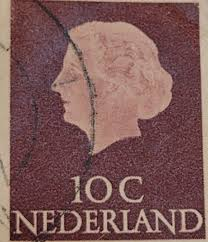 |
| Dreamstime.com | 3,070 Nose Head Chin Stock Photos - Free & Royalty-Free Stock Photos from Dreamstime - Page 24 | 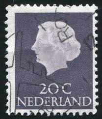 |
| Shutterstock | Dutch Stamps: Over 3,344 Royalty-Free Licensable Stock Photos | Shutterstock | 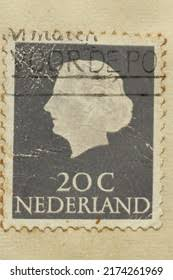 |
| PicClick UK | STAMP NETHERLANDS SG1074A 1972 60c Queen Juliana Used £0.16 - PicClick UK | 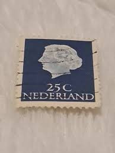 |
| Alamy | Netherlands queen juliana stamp hi-res stock photography and images - Page 3 - Alamy | 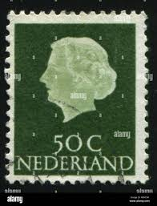 |
| allnumis.com | 60 Cents - Queen Juliana (1909-2004), duplicates - ZZ. Duplicates - Stamp - 51106 | 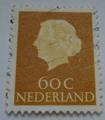 |